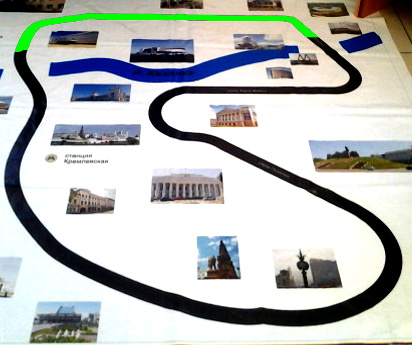

Кәҗә бистәсе (рус. Козья слобода) - тарихи Кәҗә бистәсендә урнашкан Казан метрополитенының 7-нче станциясе. Казансу елгасының аскы агымында, Ибрагимов, Декабристлар һәм Чистай урамнарының кисешкән урынында урнашкан. Станциядән дүрт чыгыш бар: беренчесе Энергетик университетка, икенчесе — Чистай урамына, өченчесе һәм дүртенчесе (2011 елда ачылган) "Ак Барс" банкына һәм "Кырлай" паркына чыга.
Борынгы риваять буенча кәҗәләр XVI гасырда Казанны вабадан коткарганнар. "Кәҗә бистәсе" станциясе 2010 елның 30 декабрендә ачыла. Станция ачылганнан соң Казан метросын кулланучы пассажирлар саны 2.5 тапкыр арта.
